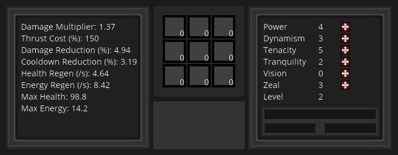

22th May 2018
So what happened this week in Beyond Dying Skies development? Did we get the machine system in place? Unfortunately no, I realized I needed to put a little more TLC into most of the legacy systems and fix some mission critical bugs.
Some of the more interesting features are the creation of random spawning chests and the portal gun which allows you to warp between different world types. The chest system will be implemented as a lottery system and reward random items to the player if found. Drones now launch missiles and can tunnel through geometry to get to the player, which usually ends in devastation. The user interface and text code got a much needed refactor which will allow expansion and new features to be added in the future. One of these features that just got implemented was the addition of allocatable stat points. Previously a fixed distribution of stat points was awarded to the player after a level up. This has been changed so that the player can select any distribution of stat points by pressing newly placed stat buttons on the extended GUI. The user interface also got some new features such as the focus bar which displays focusable objects and displays object properties such as drone health. This UI element is displayed with the use of RMB while targeting an object. It still needs to be flushed out but the proof of concept seems to work well.
The stat properties now evolve similar to how they would in a real RPG. Health, energy, and secondary attributes all scale with stat points and player level and give a unique dynamic complexity to the game. The game is starting to feel “fun” with this added complexity. The concept of “fun” still eludes me, but after making somewhat minor changes and improvements this week, I sense a shift in my cognitive response to the game. I am play testing longer, just trying to get further into the game which usually ends in me perishing to some gruesome demise. I have started “building” in the game for the first time, trying to secure a stronghold in which I could launch offensive strategies against the swarm of enemies trying to destroy my virtual world. I am starting to believe that some of the dream goals I have in mind for the game will certainly take things to the next level and I am excited to try those ideas out, but it is very important to secure a base in which to build upon first, rather than to shoot for the moon too quickly and end up failing.
With some of these user experience improvements out of the way, it might just be time to put in the machine/build system into the game. I have a unique solution to typical problems faced by build systems in other games and I believe this design could be quite interesting to play with since it involves “automation”. If this system works as I hope it will, players should be able to slowly “evolve” their world and terraform the landscape as they wish. However I believe this system will take longer than two weeks to fully implement so I may need to add additional planning before diving into it.
Check out last week's development blog here.